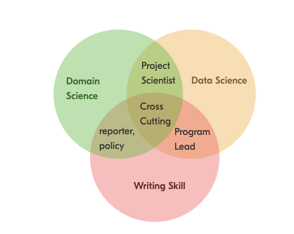
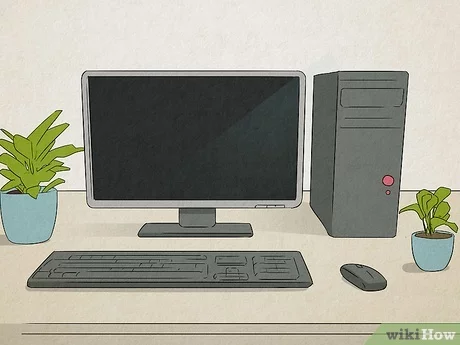
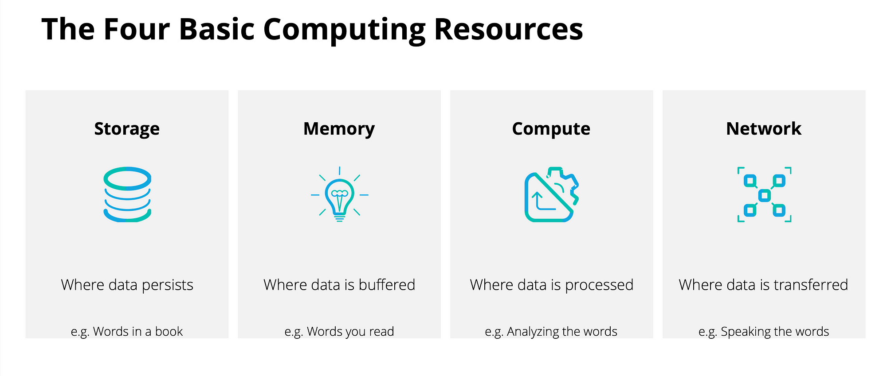
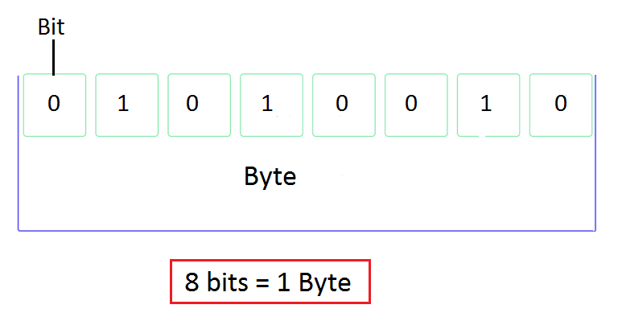
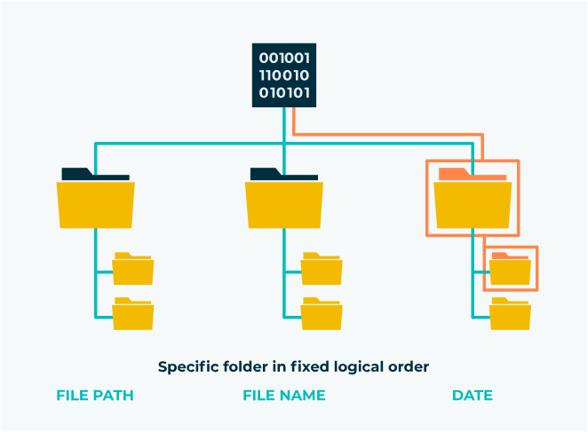
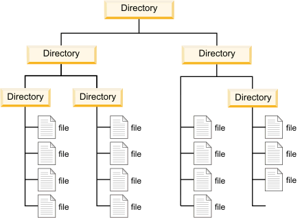
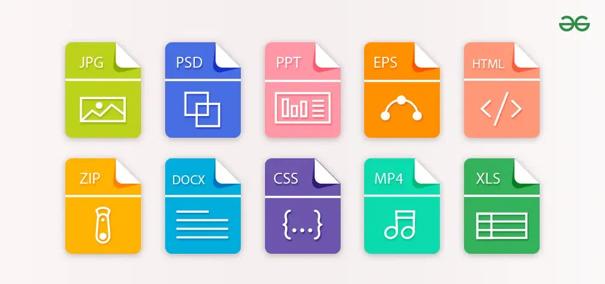
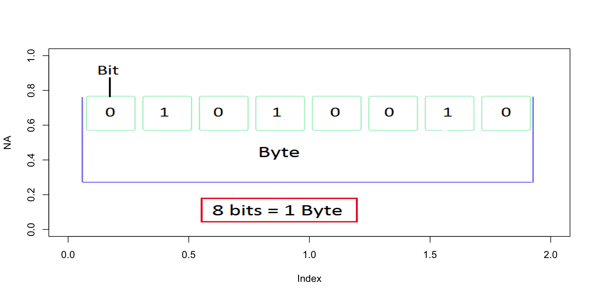
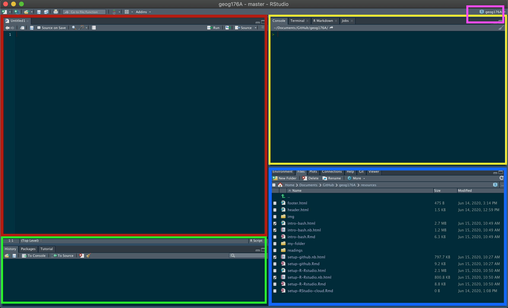
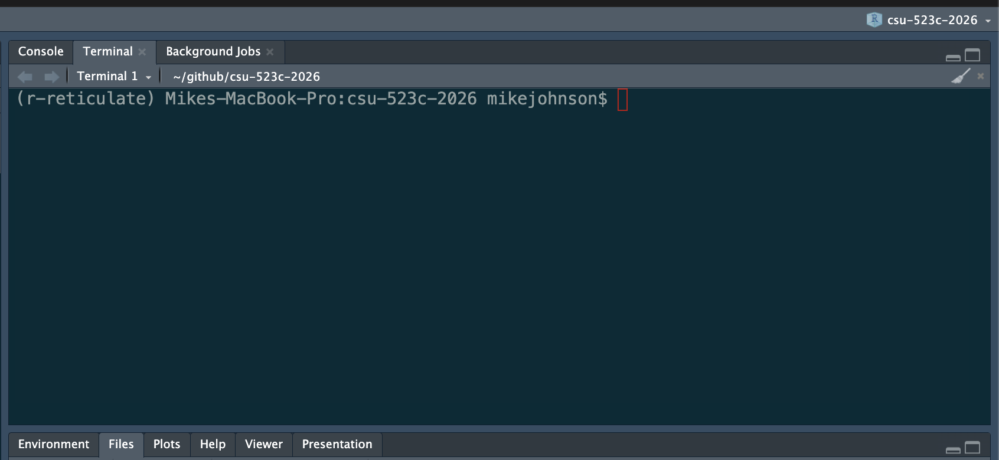

Week 1
Welcome + Your Digital Environment
Agenda & Timing
Today’s flow (1 hr 50 min)
- 0–15 min: Welcome + course overview
- 15–40 min: Files, naming, and paths
- 40–60 min: R, RStudio, version control, terminal
- 60–65 min: 5-minute break
- 65–95 min: File formats, URLs, compute cycle, examples
- 95–110 min: Wrap-up, homework, Q&A
Welcome
This is a class about water.
It is also a class about data.
Because in 2026, you cannot do one without the other.
Every flood forecast, drought assessment, water quality model, and basin-scale analysis that matters is built on someone’s ability to find, wrangle, analyze, and communicate data.
That person should be you. This class is about making sure it is.
What This Class Is About
- Developing proficiency in the tools and methods of modern environmental data science
- Emphasizing real-world applications — the datasets, formats, and workflows used in federal agencies, research labs, and consulting firms right now
- Practicing open science: reproducible workflows, version-controlled code, open formats, citable data
- Building habits that scale with you into a career
The Environmental Trifecta
Most environmental scientists have one or two of these. Few have all three.
Combining writing, data analysis, and domain expertise creates a rare and flexible professional — one who can move between science, policy, and practice.
AI can generate code. It cannot ask the right scientific question, evaluate whether the answer makes physical sense, or stand in front of a stakeholder and defend it. That combination is what we’re building.
“If not you, then who?”

Course Logistics
Instructor: Mike Johnson
- Chief Data Scientist, Lynker
- PhD in Geography, UC Santa Barbara
- 10+ years in hydrology and ecosystem science
- Active work with NOAA, USACE, and federal water programs
The work we do in this course is in many ways the same work being done at the federal/state level right now. You’re learning a living skillset.
Course site:
mikejohnson51.github.io/csu-ess-523c
Course Structure
| Week | Topic |
|---|---|
| Week 1 | Data Science Tools & Digital Environment |
| Week 2–3 | Vector Data |
| Week 4 | Raster Data |
| Week 5–6 | Machine Learning |
| Week 7 | Time Series |
Grading
Setup 50 points - Due Wednesday — ensures your environment is ready for the course
Labs (6 × 150 pts = 900 pts)
- Assigned Wednesdays, due the following Wednesday before class
- All submissions via GitHub — version control is part of the grade
- An optional final project (+150 pts extra credit) builds on your personal site from ESS 523a
Total: 950 pts (1100 possible with EC)
Grade Scale:
| Grade | Range |
|---|---|
| A+ | ≥ 96.67% |
| A | 93.33–96.67% |
| A– | 90.0–93.33% |
| B+ | 86.67–90.0% |
| B | 83.33–86.67% |
| B– | 80.0–83.33% |
| C+ | 76.67–80.0% |
| C | 70.0–76.67% |
| D | 60.0–70.0% |
| F | < 60% |
Working Together & AI Policy
Collaboration is encouraged: - Discuss problems, share approaches, help each other debug - You will learn more working with peers than alone
Individual work is required: - Your code, your writing, your results — submitted individually
On AI tools (ChatGPT, Claude, Copilot): - Acceptable: exploring concepts, debugging syntax, understanding error messages, and short illustrative code examples — always verify and understand outputs before using them. - Not acceptable: producing final analyses, lab write-ups, figures, or any submission you present as solely your own work. - Disclosure: If AI contributed substantively to your work, include a brief note in your submission describing the tool, model, and a short prompt summary. - The goal of this course is to build your capability — outsourcing that defeats the purpose - When in doubt, ask
Compute Needs
- Your own computer running a full OS — Windows, macOS, or Linux
- Chromebooks are not supported
- If this is a barrier, reach out immediately and we’ll find a solution
Quantitative Reasoning
What Is Quantitative Reasoning?
Working Definition: Thinking about data from our world to better understand and make choices about the past, present, and future.
- Many people can work with data (data scientists)
- Many people have domain knowledge (hydrologists)
- Few can do both carefully — that’s what makes you valuable
The rest of today is about building the foundation for that focusing on how computers store, find, and interpret information — and why that matters for doing science well.

Every Analysis Is a File Problem
Every piece of work in this course — and in your career — follows this chain:
Raw Data ← files on disk, often from URLs or APIs
↓ R Scripts ← read, clean, transform
Processed Data ← files on disk
↓ R Scripts ← model, summarize, visualize
Outputs ← figures, tables, reports — files on diskA broken link anywhere in this chain means the analysis cannot be reproduced.
A file you can’t find, a path that only works on your machine, a format no one else can open — these are not minor inconveniences. They are scientific failures.
“An analysis is only as reproducible as the data you can find next year.”
Your Digital Environment
The Computer
Three subsystems you need to understand:
- Disk: Persistent storage — files live here when the power is off. Reading from disk is slow.
- Memory (RAM): Ephemeral workspace — data lives here while R runs. Fast, but finite and temporary.
- CPU: Executes instructions — does the computation.
Why this matters for you:
When you load a 4 GB raster into R, it moves from disk into RAM. If your RAM is full, R crashes or slows to a crawl. Knowing where the bottleneck is (I/O? memory? compute?) is how you diagnose and fix slow analyses.

The Compute Cycle

Data flows: disk → memory → CPU → memory → disk
Every read_csv(), st_read(), and rast() call you make starts this cycle. Every write_csv() and writeRaster() ends it.
Bytes
Bits and Bytes
- A bit is one logical state:
0or1 - A byte is 8 bits
- Everything on a computer — text, images, spatial data, model outputs — is bytes
Why it matters in practice:
| Dataset | Size estimate |
|---|---|
| USGS daily flow record, 1 gauge, 50 years | ~150 KB |
| NHDPlus HR flowlines, CONUS | ~12 GB |
| NWM retrospective, 1 variable, 1 year | ~200 GB |
| 3DEP 1m DEM, single HUC4 | ~8–40 GB |

These numbers stop being surprising once you know the unit chain: KB → MB → GB → TB (each ×1,024).
Files
What Is a File?
Files save bytes on disk in a structured, meaningful way
Every file has three key properties:
- A name — how you and the computer identify it
- A path — its address in the file system hierarchy
- An extension — tells programs how to interpret the bytes
Hard drives don’t understand files — they store bytes. The file system is the organizational layer that makes bytes into named, navigable objects.

File Systems & Directories
How operating systems differ:
- Windows : drives (
C:\), backslash separators - macOS / Linux : forward slashes, everything under root
/ - Cloud (S3, GCS): looks like a filesystem, but is actually flat key-value storage
Key vocabulary:
| Term | Meaning |
|---|---|
| Root | Top-level directory — contains everything |
| Working directory | Where your session is (getwd()) |
| Parent directory | One level up (..) |
| Subdirectory | A folder inside the working directory |

File Naming
The Importance of Names
Tip
“There are only two hard things in Computer Science: cache invalidation and naming things.” ~Phil Karlton
File names are how you — and your collaborators — navigate a project. There is no enforced standard. The decisions are always yours.
Bad names compound silently. One bad name is annoying. A project full of them is a crisis.
Three Principles
- Machine readable — unambiguous, parseable, regex-friendly
- Human readable — tells you what’s inside without opening it
- Sortable — natural order reflects logical order
Machine Readable
- No spaces, no punctuation, no accented characters, no mixed case
- Use regular expression friendly (e.g. use patterns!)
- Use ISO 8601 dates:
YYYY-MM-DD— they sort correctly as strings - Consistent delimiters:
_separates metadata fields-separates words within a field
This makes files easy to …
Search Programmatically:
#> [1] "1903-07-01_08033500_00060_tyler_tx.txt"
#> [2] "1923-10-01_08033000_00060_angelina_tx.txt"Operate on:
Metadata is recoverable without opening a single file:
#> StartDate siteID parameterCode county state extension
#> 1 1903-07-01 08033500 00060 tyler tx txt
#> 2 1923-10-01 08033000 00060 angelina tx txt
#> 3 1923-10-01 08180500 00060 medina tx txt
#> 4 1923-12-01 08082500 00060 baylor tx txt
#> 5 1924-08-01 08062500 00060 ellis tx txtHuman Readable + Sortable
Human readable — the name communicates content and purpose. Here, we see the order that the files run (utilities, download, clean, analyze, figures), the project they belong to (src), are archived in the file names.
#> Order Project Purpose extension
#> 1 00 src utils R
#> 2 01 src data-download R
#> 3 02 src data-clean R
#> 4 03 src analysis R
#> 5 04 src figures RSortable — leading zeros and ISO dates keep files in logical order:
✅ 01_src_download.R 2024-01-15_sw-discharge_co.csv
02_src_clean.R 2024-02-03_sw-discharge_co.csv
03_src_analyze.R 2024-11-20_sw-discharge_co.csv
❌ 1_download.R 01-15-2024_data.csv
10_figures.R 11-20-2024_data.csv
2_clean.R 02-03-2024_data.csvFile Paths
System of Directions
File paths tell us the location of a file within the file system
Directories are stored as hierarchies, again with root (home) directory being the one holding everything on a system
The folder you are in, is called your working directory. (think
pwd)The folder above the working directory is the parent directory
All folders within the working directory are sub folders or child folder
Absolute vs. Relative Paths
Absolute — starts from root, always resolves, but only on your machine:
Relative — starts from the working directory, works anywhere the project is opened:
. and .. shorthand:
. = this directory
.. = the parent directory
../data/raw/flow.csv → up one level, then into data/raw/Important
Absolute paths are the #1 reproducibility killer in shared projects. If your code contains /Users/yourname/, it will break the moment anyone else runs it — including future you on a new machine.
RStudio Projects + here
Tip
RStudio Projects (.Rproj) automatically set the working directory to the project root when opened — making relative paths reliable by default.
Best practices:
- Keep all project files together: raw data, scripts, outputs, figures
- Never hardcode paths outside the project root
- Use
here::here()for paths inside packages or Quarto documents — it anchors to the project root regardless of where the.qmdlives
Enforcing Relative Paths
Tip
Working with absolute paths can be a pain compared to relative paths…
It is a good practice to keep all the files associated with a project — input data, R scripts, analytic results, figures - together.
This is such a common practice that RStudio has built-in support for this via projects.
A good project layout will ultimately make your life easier:
- It will help ensure the integrity of your data;
- It makes it simpler to share your code with someone else (a lab-mate, collaborator, or supervisor);
- It allows you to easily upload your code with your manuscript submission;
- It makes it easier to pick the project back up after a break.
File Extensions
Context
All files store bits.
Extensions can be considered a type of metadata that provides information about the way data might be stored
There are 1000’s of different formats for data ranging from common to custom
Each format defines how the sequence of bits and bytes are laid out
Indicate the characteristics of the file, its intended use, and the default applications that can open/use the file.
If you double click a
.docxfile it opens in Word which interprets the meaning of the bytesIf you double click an
.Rfile it opens with RStudio, and R interprets the meaning of the bytes

Extension Interpretation
- Readers depended on anticipated structure
- The file is actually a PNG with the wrong file extension. “0x89 0x50” is how a PNG file starts.
- The data returned to R is a structured set of bits, interpreted according to the directions of the file and the interpreting language!
Information pass through:
Bytes Being Interpreted
Bytes Being Interpreted
Bytes Being Interpreted
#> [1] "CSU 523C"
#> [1] 43 53 55 20 35 32 33 43
#> [1] 01 01 00 00 00 00 01 00 01 01 00 00 01 00 01 00 01 00 01 00 01 00 01 00 00
#> [26] 00 00 00 00 01 00 00 01 00 01 00 01 01 00 00 00 01 00 00 01 01 00 00 01 01
#> [51] 00 00 01 01 00 00 01 01 00 00 00 00 01 00Bytes Being Interpreted
#> [1] "CSU 523C"
#> [1] 43 53 55 20 35 32 33 43
#> [1] 01 01 00 00 00 00 01 00 01 01 00 00 01 00 01 00 01 00 01 00 01 00 01 00 00
#> [26] 00 00 00 00 01 00 00 01 00 01 00 01 01 00 00 00 01 00 00 01 01 00 00 01 01
#> [51] 00 00 01 01 00 00 01 01 00 00 00 00 01 00
#> [1] 64Bytes Being Interpreted
#> [1] "CSU 523C"
#> [1] 43 53 55 20 35 32 33 43
#> [1] 01 01 00 00 00 00 01 00 01 01 00 00 01 00 01 00 01 00 01 00 01 00 01 00 00
#> [26] 00 00 00 00 01 00 00 01 00 01 00 01 01 00 00 00 01 00 00 01 01 00 00 01 01
#> [51] 00 00 01 01 00 00 01 01 00 00 00 00 01 00
#> [1] 64
#> [1] 8Bytes Being Interpreted
#> [1] "CSU 523C"
#> [1] 43 53 55 20 35 32 33 43
#> [1] 01 01 00 00 00 00 01 00 01 01 00 00 01 00 01 00 01 00 01 00 01 00 01 00 00
#> [26] 00 00 00 00 01 00 00 01 00 01 00 01 01 00 00 00 01 00 00 01 01 00 00 01 01
#> [51] 00 00 01 01 00 00 01 01 00 00 00 00 01 00
#> [1] 64
#> [1] 8
#> [1] TRUEHow images are rendered:

Common Formats in Water Resources Data Science
| Format | Type | Common Use |
|---|---|---|
.csv |
Text | Tabular field data, gauge records, water quality |
.json / .geojson |
Structured | Web APIs, geographic feature exchange |
.tif / .geotiff |
Binary | Satellite imagery, DEMs, classified rasters |
.nc (NetCDF) |
Binary | NWM output, climate models, multi-dimensional arrays |
.gpkg (GeoPackage) |
Structured | Vector + raster, open standard, replaces Shapefile |
.shp (Shapefile) |
Binary | Legacy vector data — still everywhere, many limitations |
.parquet |
Binary | Large tabular/spatial data, fast I/O, cloud-native |
URLs as File Paths
URL Structure
| Part | Example | Analogy |
|---|---|---|
| Protocol | https://, s3:// |
How to travel |
| Domain | waterservices.usgs.gov |
The server (building) |
| Path | /nwis/iv/ |
Directory (floor/room) |
| File | flow_2024.csv |
The file |
| Parameters | ?sites=06752260¶meterCd=00060 |
Filters on the request |
URLs Are Just Remote Paths
The file system logic you just learned applies directly to URLs:
https://mikejohnson51.github.io/csu-ess-330/slides/1-welcome.html#/title-slide
↑ server (domain) ↑ directory ↑ file ↑ anchor
s3://noaa-nwm-retrospective-3-0-pds/CONUS/zarr/chrtout.zarr
↑ bucket ↑ directory ↑ fileAnd URLs are your data pipeline:
# USGS streamflow — the path IS the query
url <- "https://waterservices.usgs.gov/nwis/iv/?sites=06752260¶meterCd=00060&format=json"
data <- jsonlite::fromJSON(url)
dplyr::glimpse(data)(data)
# NWM retrospective on S3 — same concept, different protocol
s3_path <- "s3://noaa-nwm-retrospective-3-0-pds/CONUS/zarr/chrtout.zarr"Query parameters (?sites=...¶meterCd=...) filter data at the server before it reaches your machine. Understanding URL structure means understanding how to ask for exactly what you need.
Putting It Together
Every analysis: question → data (files + paths + formats) → compute → output (files + paths + formats)
The concepts from today — bytes, files, names, paths, extensions, URLs — are the substrate every analysis runs on. They feel like setup. They are actually the foundation.
5-Minute Break
Take five — stretch, hydrate, and reset.
Return in 5 minutes.
R + RStudio
R vs. RStudio
- These are two separate things. Confusing them is the most common source of early frustration.
R — the language and engine - Does the actual computation - Runs without RStudio - Must be installed first
RStudio — the IDE (development environment) - The interface you’ll look at all day - Organizes files, environment, plots, packages, terminal - Makes R usable — but it is not R
Analogy: R is the engine. RStudio is the dashboard and steering wheel. You need both, but they are not the same thing.

The Four Panes
| Pane | Location | Purpose |
|---|---|---|
| Source | Top left | Write and save scripts — your permanent work |
| Console / Terminal | Top right | Run R interactively; access the shell |
| History / Packages / Git | Bottom left | Command history, package manager, version control |
| Environment / Files / Plots / Help | Bottom right | Objects in memory, file browser, output viewer, documentation |
Important
The console does not save your work. Anything you run there and don’t put in a script is gone when you close RStudio. Build the habit early: if it matters, it goes in a script.
Packages: Extending R
- Base R: ships with R — vectors, data frames, basic statistics, plots
- Packages: functions written by the community, installed from CRAN (or github/biocondutor/etc), loaded per session
Core packages for this course:
| Package | Purpose |
|---|---|
tidyverse |
Data manipulation (dplyr, tidyr) and visualization (ggplot2) |
sf |
Vector spatial data — points, lines, polygons |
terra |
Raster spatial data — grids, DEMs, satellite imagery |
tidymodels |
Machine learning with tidy principles |
Version Control
You Have Already Done This
analysis_final.R
analysis_final_v2.R
analysis_final_ACTUAL_FINAL.R
analysis_mikereview_jan12.R
analysis_mikereview_jan12_USETHISONE.RThis is version control, just done badly.
It doesn’t tell you what changed, why it changed, or which version to trust. It breaks completely the moment two people work on the same file.
Git provides a solution.
It tracks every change to every file — with a timestamp, an author, and a message — and lets you revert to any previous state. Not just for code: data, reports, quarto documents, everything.
Git + GitHub
Git runs on your machine — the version control engine
GitHub hosts your repositories in the cloud — collaboration, backup, and portfolio in one place
Together:
- Complete, auditable history of every project
- Collaborate without overwriting each other
- Revert any file to any previous state
- Public portfolio of your work
- The standard for open, reproducible science
All labs in this course are submitted via GitHub. We set it up together in this week’s homework — by next class, this will already be part of your workflow.

The Terminal
Your Power Tool
The terminal is a text interface to your file system. It feels archaic. It is indispensable.
Git, package installation, server connections, working in the cloud — all of it eventually touches the terminal. The sooner it feels normal, the better.
| Command | Does |
|---|---|
pwd |
Where am I? |
ls |
What’s here? |
cd folder |
Move into folder |
cd .. |
Move up one level |
mkdir name |
Create a directory name |
cp a b |
Copy a to b |
mv a b |
Move / rename a to b |
In RStudio: Terminal tab, next to Console — use it there until the standalone terminal feels comfortable.

Before Next Class
This week’s homework ensures your environment is ready:
Lab 00: Verify Your Environment + Meet Your Tools
Confirm your R, RStudio, and Git setup — install course packages, configure Git, connect to GitHub. Come to the next class ready to code!
Next topic: Data Manipulation crash course